Chương 10 — Lão hóa khỏe mạnh, Yoga và não bộ
CHƯƠNG 10
Lão hóa khỏe mạnh, Yoga và Não bộ
Bộ não thay đổi suốt cuộc đời. Những trải nghiệm của chúng ta, cả bên trong lẫn bên ngoài, góp phần định hình nên con người chúng ta. Tập yoga và thiền định có thể mang lại lợi ích ở mọi lứa tuổi – từ sơ sinh, trẻ nhỏ, thanh thiếu niên, người trưởng thành đến người cao tuổi. Chương này sẽ khám phá cơ sở khoa học đằng sau cách thức các thực hành này có thể cải thiện sức khỏe não bộ, thúc đẩy sự an lạc và làm chậm quá trình lão hóa nhằm nâng cao chất lượng cuộc sống và kéo dài số năm sống khỏe mạnh.
NHỮNG NĂM ĐẦU ĐỜI: GIAI ĐOẠN SƠ SINH VÀ THƠ ẤU
Bộ não con người trải qua những thay đổi phi thường trong suốt thai kỳ, giai đoạn sơ sinh và thời thơ ấu. Khi mới sinh, kích thước não của trẻ sơ sinh bằng một phần tư kích thước não của người trưởng thành (Ikeda and Teasdale, 2018). Mặc dù các bó chất trắng được hình thành trước khi sinh, các sợi trục này được bao myelin hóa trong hai năm đầu đời. Quá trình myelin hóa cho phép giao tiếp giữa các tế bào thần kinh diễn ra nhanh hơn. Chất xám cũng mở rộng nhanh chóng trong giai đoạn này, và độ dày của vỏ não đạt đỉnh vào khoảng từ một đến hai tuổi (Gilmore, Knickmeyer and Gao, 2018). Đến hai tuổi, bộ não non trẻ đã phát triển đạt ba phần tư kích thước não người trưởng thành (Ikeda and Teasdale, 2018). Trong vài năm đầu đời, hơn 1 triệu kết nối mới được tạo ra giữa các tế bào thần kinh mỗi giây (Harvard University, 2007). Não bộ trẻ sơ sinh được xem là có tính dẻo và dễ uốn nắn, nên rất dễ tác động đến cấu trúc não đang phát triển. Những con đường thần kinh đầu tiên phát triển là các con đường liên quan đến giác quan như thị giác và thính giác. Tiếp theo, các mạch ngôn ngữ bắt đầu phát triển, sau đó là các chức năng nhận thức phức tạp, bậc cao hơn. Các kết nối không được sử dụng sẽ bị giảm bớt hoặc cắt tỉa để các mạch não hoạt động hiệu quả hơn.
Sự phát triển của não bộ chịu ảnh hưởng bởi cả gen và trải nghiệm. Trong khi gen cung cấp bản thiết kế, trải nghiệm lại tác động đến việc gen nào được biểu hiện. Ví dụ, trẻ nhỏ tìm kiếm sự khẳng định, lòng tốt và tình cảm từ người chăm sóc. Sự chăm sóc nuôi dưỡng là nền tảng cho một bộ não phát triển khỏe mạnh. Nếu trẻ sơ sinh hoặc trẻ nhỏ không nhận được những phản hồi hay trải nghiệm như vậy, các cấu trúc trong não của trẻ có thể bị biến đổi, khiến trẻ dễ gặp những khác biệt về học tập và hành vi hơn. Những năm đầu đời xây dựng nền tảng cho sức khỏe não bộ trong tương lai.
Yoga cho tâm trí non trẻ Bộ não non trẻ rất dễ tiếp thu và được thiết kế để học hỏi. Giai đoạn sơ sinh và thơ ấu là thời điểm tuyệt vời để giới thiệu các thực hành chiêm nghiệm nhằm kích thích sự phát triển của não bộ và thúc đẩy việc học tập về mặt cảm xúc lẫn thể chất. Yoga cho trẻ sơ sinh hoặc trẻ nhỏ thường bao gồm các động tác kéo giãn nhẹ nhàng và vận động theo nhạc dành cho trẻ từ ba tháng tuổi trở lên. Những chuyển động chậm rãi, có kiểm soát này giúp phát triển cơ bắp và thần kinh. Một số động tác như đạp xe chân có thể hỗ trợ hệ tiêu hóa của bé bằng cách giải phóng lượng khí tích tụ, trong khi các tư thế nằm sấp giúp tăng cường cơ lưng trên và cơ cổ (MacDonald, 2013). Yoga cho trẻ sơ sinh cũng có thể cải thiện giấc ngủ và giảm nồng độ các hormone căng thẳng như cortisol, dù nghiên cứu vẫn chưa xác nhận điều này. Mát-xa cũng thường là một phần của các lớp học này, và đã được chứng minh là giúp tăng cường sự gắn kết giữa người chăm sóc và trẻ cũng như giảm căng thẳng ở trẻ (Lee, 2006).
Mẹo dạy yoga cho trẻ sơ sinh hoặc trẻ mới biết đi
Giữ thời lượng lớp học ngắn, khoảng 20–30 phút. Giữ quy mô lớp học nhỏ. Cung cấp nhiều dụng cụ hỗ trợ như chăn, gạch tập và đệm để lớp học được thoải mái. Sắp xếp thảm và dụng cụ trước khi bắt đầu lớp. Đảm bảo tất cả các tư thế đều cho phép người chăm sóc duy trì tiếp xúc cơ thể với trẻ. Cho phép người chăm sóc cho trẻ ăn hoặc thay tã trong giờ học.
VÍ DỤ CHUỖI BÀI TẬP YOGA CHO BÉ
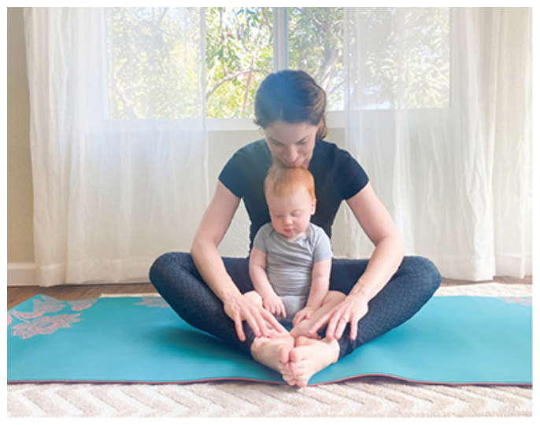
Hình 10.1 Tư thế góc cố định đôi.
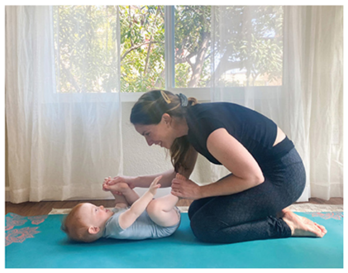
Hình 10.2 Đạp xe chân cùng bé.
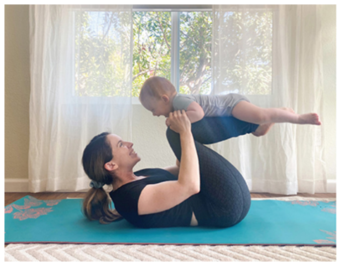
Hình 10.3 Nâng chân cùng bé.
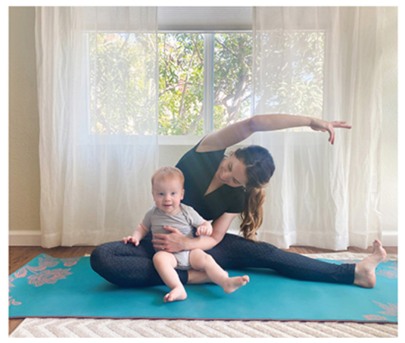
Hình 10.4 Biến thể tư thế ngồi nghiêng lườn.
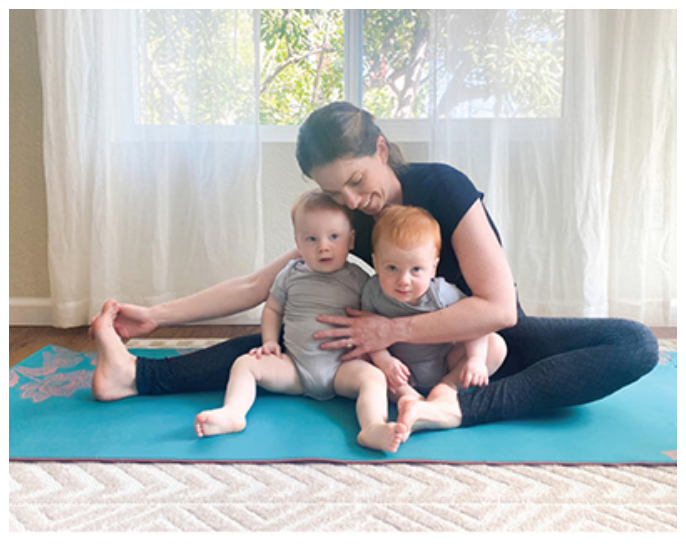
Hình 10.5 Biến thể tư thế kéo giãn chân.
Hình 10.6 Tư thế ngồi gập người về trước.
Hình 10.7 Tư thế tấn thấp cùng bé.
Hình 10.8 Tư thế tấm ván nghiêng trong khi nhìn bé.
Những điểm chính cần ghi nhớ
Bộ não con người trải qua sự phát triển đáng kinh ngạc trong vài năm đầu đời. Những năm đầu đời xây dựng nền tảng cho sức khỏe não bộ trong tương lai. Sự phát triển của não bộ chịu ảnh hưởng bởi cả gen và trải nghiệm. Yoga có thể giúp phát triển cơ bắp và thần kinh. Nó cũng có thể cải thiện giấc ngủ và giảm nồng độ các hormone căng thẳng như cortisol.
BỘ NÃO ĐANG TRƯỞNG THÀNH: TRẺ EM VÀ THANH THIẾU NIÊN
Ở giai đoạn trẻ em (5–12 tuổi) và thanh thiếu niên (12–18 tuổi), bộ não đang trưởng thành bắt đầu trở nên chuyên biệt hơn để đảm nhận các chức năng phức tạp hơn. Não bộ tiếp tục cắt tỉa những kết nối không sử dụng hoặc không cần thiết, nhưng đồng thời cũng bắt đầu giảm khả năng tạo ra các kết nối mới giữa các tế bào thần kinh (Cressman et al., 2010; Mallya et al., 2018). Mặc dù luôn có thể học một kỹ năng mới như ngoại ngữ, việc này trở nên khó khăn hơn khi não bộ trưởng thành.
Nhiều thay đổi ở não diễn ra trong giai đoạn này, bao gồm cả những thay đổi về cấu trúc và chức năng não. Hệ thống cảm xúc – xã hội dẫn đến sự gia tăng hành vi tìm kiếm phần thưởng hoạt động mạnh nhất trong tuổi dậy thì và suy giảm khi trưởng thành khi hệ thống kiểm soát nhận thức phát triển đầy đủ hơn (Steinberg, 2008). Vỏ não trước trán, một phần của hệ thống kiểm soát nhận thức chịu trách nhiệm về lý luận và kiểm soát hành vi, là một trong những vùng não đạt đến độ trưởng thành muộn nhất (Arain et al., 2013). Các nhà khoa học tin rằng sự chậm trễ trong quá trình trưởng thành của vỏ não trước trán là nguyên nhân khiến thanh thiếu niên dễ có hành vi bốc đồng. Giai đoạn thanh thiếu niên cũng là lúc con người bắt đầu hình thành bản sắc và ý thức về bản thân. Đây là một giai đoạn có sức ảnh hưởng lớn, và bộ não con người được thiết kế để lưu giữ ký ức mạnh mẽ nhất từ khoảng thời gian này trong cuộc đời (Munawar, Kuhn and Haque, 2018).
Lợi ích của yoga và thiền định đối với trẻ em và thanh thiếu niên Việc tham gia tập luyện thể chất và thiền định thường xuyên khi còn nhỏ tác động đến sự phát triển của não bộ. Yoga giúp phát triển các kết nối giữa các tế bào thần kinh liên quan đến thăng bằng và sự linh hoạt (Donahoe-Fillmore and Grant, 2019). Thiền chánh niệm có thể cải thiện thành tích học tập và khả năng tập trung, giảm lo âu và trầm cảm, đồng thời cải thiện kỹ năng xã hội (Beauchemin, Hutchins and Patterson, 2008; Ching et al., 2015).
Để khai thác những lợi ích lâu dài của yoga và thiền định, việc bắt đầu tập luyện từ nhỏ là điều hợp lý. Các nhà nghiên cứu từ Đại học Heidelberg ở Đức và Đại học Sfax ở Tunisia đã khảo sát tác động của một chương trình can thiệp yoga kéo dài ba tháng đối với hiệu suất nhận thức, khả năng phối hợp và hành vi của trẻ mẫu giáo (Jarraya et al., 2019). Trong nghiên cứu, trẻ mẫu giáo tham gia tập Hatha yoga hai lần một tuần, mỗi lần 30 phút, trong khi một nhóm trẻ khác tham gia giờ giáo dục thể chất, và nhóm thứ ba không tham gia hoạt động thể chất nào cả.
Nhóm trẻ mẫu giáo tham gia tập yoga cho thấy sự gia tăng về khả năng chú ý và phối hợp, đồng thời giảm tăng động hơn so với nhóm giáo dục thể chất. Những yogi nhí này cũng có thể hoàn thành nhiệm vụ nhanh hơn những trẻ tham gia giáo dục thể chất hoặc không tập thể dục. Các phát hiện chứng minh rằng yoga có thể là một công cụ hữu ích trong lớp học, giúp trẻ học cách tập trung và tự điều chỉnh (Jarraya et al., 2019).
Năm 2016, các nhà nghiên cứu từ Trường Y Harvard và Trung tâm Yoga & Sức khỏe Kripalu đã tiến hành một bài tổng quan về tác động của các chương trình yoga tại trường học đối với sức khỏe tinh thần, cảm xúc, thể chất và hành vi của thanh thiếu niên (Khalsa and Butzer, 2016). Các nhà khoa học đã xem xét 47 ấn phẩm về chủ đề này và nhận thấy yoga cải thiện mọi khía cạnh sức khỏe của trẻ em và thanh thiếu niên trong môi trường học đường. Họ lưu ý rằng nghiên cứu trong lĩnh vực này còn hạn chế và nên được xem là kết quả sơ bộ.
Sức khỏe tâm thần Bộ não và các hệ thống sinh học khác có khả năng thích nghi cao nhất vào đầu đời. Việc phát triển khả năng phục hồi từ sớm đặt nền móng cho hàng loạt hành vi kiên cường trong suốt phần đời còn lại. Các thực hành chiêm nghiệm có thể giúp trẻ trở nên kiên cường hơn và đối phó với căng thẳng theo những cách tích cực. Yoga và thiền định có thể cải thiện tâm trạng, sự tự tin, khả năng điều hòa cảm xúc và sức bật tinh thần (Hagen and Nayar, 2014). Do đó, những thực hành này là một công cụ hữu ích để cải thiện cả sức khỏe thể chất lẫn tinh thần.
Các nhà nghiên cứu từ Đại học Rutgers đã rà soát 27 nghiên cứu xem xét hiệu quả của yoga như một biện pháp can thiệp cho trẻ em và thanh thiếu niên mắc chứng lo âu và trầm cảm (James-Palmer et al., 2020). Mặc dù loại hình can thiệp yoga khác nhau giữa các nghiên cứu, 58% nghiên cứu cho thấy yoga giúp làm giảm các triệu chứng của cả lo âu và trầm cảm. Đối với các nghiên cứu chỉ xem xét lợi ích của yoga đối với lo âu hoặc trầm cảm, 70% nghiên cứu ghi nhận sự cải thiện các triệu chứng lo âu, trong khi 40% cho thấy giảm các triệu chứng trầm cảm. Dù có những phát hiện tưởng chừng mạnh mẽ này, các tác giả lưu ý rằng nhiều nghiên cứu chỉ đạt chất lượng từ thấp đến trung bình (James-Palmer et al., 2020). Tuy nhiên, dường như yoga thực sự có thể giúp giảm ở một mức độ nào đó các triệu chứng của cả lo âu và trầm cảm ở trẻ em và thanh thiếu niên.
Một tổng quan hệ thống khác đã khám phá các hình thức tập luyện khác nhau và cách chúng ảnh hưởng đến học sinh mắc chứng rối loạn tăng động giảm chú ý (ADHD) (Cerrillo-Urbina et al., 2015). Các nhà nghiên cứu từ Đại học Castilla-La Mancha ở Tây Ban Nha đã đưa tám thử nghiệm đối chứng ngẫu nhiên với tổng cộng 249 người tham gia vào phân tích của mình. Khi xem xét kết quả từ tám nghiên cứu này, các nhà khoa học nhận thấy yoga cải thiện các triệu chứng của ADHD, bao gồm thiếu chú ý, tăng động và bốc đồng (CerrilloUrbina et al., 2015).
Một nghiên cứu khác do các nhà khoa học từ Đại học Duke thực hiện cho thấy một chương trình can thiệp kéo dài một năm gồm yoga, thiền định và trị liệu vui chơi đã giúp học sinh từ 6–11 tuổi mắc ADHD cải thiện thành tích học tập (Mehta et al., 2012). Chương trình này cũng giúp giảm các triệu chứng ADHD của trẻ. Những chương trình như vậy có thể dễ dàng triển khai trong môi trường học đường và nên được xem là một lựa chọn tiết kiệm chi phí để hỗ trợ học sinh mắc ADHD.
Mẹo dạy yoga cho trẻ em và thanh thiếu niên
Hãy tạo một câu chuyện yoga cho trẻ nhỏ. Chọn một chủ đề và 5–8 tư thế yoga có thể lồng ghép vào câu chuyện. Kết hợp các tư thế, câu chuyện và trí tưởng tượng để tạo nên một buổi học thú vị! Trẻ nhỏ thường có khoảng thời gian tập trung ngắn, chỉ kéo dài vài phút. Vì vậy, các bài thiền ngắn có thể giúp thu hút bộ não của trẻ và tăng cường khả năng tập trung. Thanh thiếu niên có thể theo một phong cách lớp học tương tự người lớn, nhưng điều quan trọng cần nhớ là não bộ của các em vẫn đang phát triển và khoảng chú ý ngắn hơn. Nếu bạn dạy nhiều thanh thiếu niên trong một lớp, bạn có thể cân nhắc lồng ghép một số trò chơi hoặc bài tập theo cặp. Chẳng hạn, bạn có thể dùng tư thế cái cây đôi để luyện thăng bằng cùng người khác. Những hoạt động này giúp phát triển kỹ năng giao tiếp và hợp tác. Hãy kết hợp âm nhạc vào bài tập yoga để kích hoạt não bộ nhiều hơn nữa!
Ví dụ câu chuyện yoga cho trẻ nhỏ
Hình 10.9 Những chú chim bay trên bãi biển.
Nguồn: Frank McKenna trên Unsplash.
Hãy tưởng tượng con đang đi dạo trên một bãi biển đầy cát. Bắt đầu thoa kem chống nắng lên cánh tay và cố gắng với ra sau để thoa lên lưng. Rồi con thấy một chú hải âu ở bên trái. Con có thể làm cho cô/thầy xem tư thế nào trông giống chú hải âu không? Tốt lắm, giờ tiếp tục đi dọc bãi biển nhé. Con bắt gặp một chú hải cẩu đang đùa giỡn trong sóng. Tư thế nào trông giống chú hải cẩu nhỉ? Con tiếp tục đi dọc bãi biển và bắt đầu cảm thấy hơi buồn ngủ vì nắng gắt. Con nằm xuống khăn tắm để nghỉ ngơi.
Thiền chánh niệm là một thực hành chiêm nghiệm khác giúp trẻ học cách nhận biết rõ hơn về các giác quan, cải thiện khả năng điều hòa cảm xúc, phát triển lòng trắc ẩn và sự kết nối, đồng thời thúc đẩy việc học tập cảm xúc – xã hội (Moreno-Gómez and Cejudo, 2018).
Các chương trình chánh niệm cải thiện hành vi trong lớp học. Trong một nghiên cứu lớn trên 409 học sinh tiểu học, các nhà khoa học từ Đại học California, Los Angeles đã nghiên cứu tác động của một chương trình chánh niệm kéo dài năm tuần lên nhiều chỉ số hành vi khác nhau, bao gồm khả năng chú ý, tự kiểm soát, tham gia hoạt động và tôn trọng người khác (Black and Fernando,
2013). Họ nhận thấy hành vi của học sinh được cải thiện đáng kể nhờ chương trình can thiệp, và những lợi ích này kéo dài gần bảy tuần sau khi kết thúc can thiệp.
Ví dụ bài thiền chánh niệm cho trẻ em
Hãy tìm một chỗ ngồi thoải mái hoặc nằm xuống.
Nhẹ nhàng nhắm mắt lại. Bắt đầu lắng nghe những âm thanh ngay xung quanh con.
Con nghe thấy gì nào? Bây giờ, hãy bắt đầu lắng nghe những âm thanh ở xa hơn một chút.
Con có nghe thấy tiếng chim hót hay tiếng xe cộ không? Hãy cố gắng lắng nghe mọi âm thanh xung quanh mình.
Ví dụ bài tập thở cho trẻ em và thanh thiếu niên
Chúng ta hãy cùng ngồi xuống nào.
Hít một hơi thật sâu. Bây giờ, nín thở và đếm đến bốn. Rồi thổi hơi ra, tạo ra âm thanh “vù”.
Hãy thử lại lần nữa nhé. Lặp lại bài tập này bốn lần.
Những điểm chính cần ghi nhớ
Ở giai đoạn trẻ em và thanh thiếu niên, bộ não đang trưởng thành bắt đầu trở nên chuyên biệt hơn để đảm nhận các chức năng phức tạp hơn. Vỏ não trước trán là một trong những vùng não trưởng thành muộn nhất, đó là lý do thanh thiếu niên dễ có hành vi bốc đồng. Yoga giúp phát triển các kết nối giữa các tế bào thần kinh liên quan đến thăng bằng và sự linh hoạt.
Yoga cũng có thể là một công cụ hữu ích trong lớp học, giúp trẻ em và thanh thiếu niên học cách tập trung và tự điều chỉnh. Tập yoga cũng có thể giúp giảm các triệu chứng lo âu và trầm cảm cũng như cải thiện các triệu chứng của ADHD. Thiền định có thể cải thiện thành tích học tập, khả năng tập trung, giảm lo âu và trầm cảm, và cải thiện kỹ năng xã hội.
TRỞ THÀNH CHÍNH BẠN: BỘ NÃO NGƯỜI TRƯỞNG THÀNH
Độ tuổi đôi mươi là những năm tháng chuyển mình của tuổi trưởng thành trẻ. Mặc dù não đạt thể tích trưởng thành vào khoảng mười tuổi, nhiều vùng não vẫn chưa trưởng thành hoàn toàn. Não bộ trưởng thành từ sau ra trước. Thùy chẩm được cho là trưởng thành vào khoảng 20 tuổi, trong khi vỏ não trước trán phải đến gần 30 tuổi mới đạt độ trưởng thành. Khi giải phẫu não tiếp tục thay đổi, các chức năng của nó cũng thay đổi theo. Những việc như tự đánh giá, lập kế hoạch dài hạn và điều hòa cảm xúc trở nên dễ dàng hơn nhiều. Việc ra quyết định và phán đoán cũng bắt đầu rõ nét hơn khi vỏ não trước trán vận hành đầy đủ.
Yoga và thiền định cho người trưởng thành Nhìn chung, yoga và thiền định giúp cải thiện và duy trì sức khỏe thể chất lẫn tinh thần bằng cách nâng cao chất lượng cuộc sống và kỹ năng đối phó, giảm căng thẳng, đồng thời cải thiện lòng tự trắc ẩn và huyết áp (Ditto, Eclache and Goldman, 2006; Nidich et al., 2009; Gard et al., 2012).
Nhưng tính bao hàm (hoặc sự thiếu hụt nó) có thể là một vấn đề tại nhiều phòng tập. Chẳng hạn, yoga có thể tác động tích cực đến hình ảnh cơ thể, nhưng điều đó phụ thuộc vào môi trường lớp học. Những người tham gia một nghiên cứu do các nhà nghiên cứu từ Đại học Minnesota thực hiện mô tả yoga mang lại tác động tích cực về những thay đổi thể chất, lòng biết ơn đối với cơ thể, sự tự tin và cảm giác thành tựu (Neumark-Sztainer, Watts and Rydell, 2018). Các học viên yoga cũng mô tả rằng đôi khi lớp học mang lại cảm giác cạnh tranh khi họ nhìn quanh phòng và thấy sự thiếu đa dạng về hình dáng và kích thước cơ thể người tập. Nam giới cũng thường không thấy mình được đại diện trong không gian phòng tập. Các phòng tập và giảng viên yoga nên cố gắng tạo ra một môi trường cởi mở, bao hàm cho học viên thuộc mọi hình dáng, kích thước, giới tính, xu hướng và khả năng.
Mẹo giúp lớp học yoga trở nên bao hàm hơn
Bình thường hóa và cung cấp các biến thể tư thế phù hợp với nhiều dạng cơ thể và khả năng khác nhau. Sử dụng ngôn ngữ không phán xét và không mang tính cạnh tranh. Hướng dẫn bằng những từ như “mời” hoặc “khám phá” để khuyến khích học viên thử một tư thế hay chuyển động. Yêu cầu học viên tự tìm hiểu cảm nhận của chính mình trong quá trình tập thay vì bảo họ phải cảm thấy thế nào. Giữ ngôn ngữ trung tính về giới để tạo không gian cho nhiều trải nghiệm đa dạng. Hãy thử nói “chào mừng mọi người” thay vì “chào mừng các chị em” khi chào lớp, và tìm cách chỉ dẫn các điểm mốc trên cơ thể mà không đề cập đến các bộ phận mang tính giới tính.
Phỏng theo: Making Yoga More Inclusive: Language Do’s and
Don’ts của Amber Karnes. Nguồn: https://yogainternational.com/article/view/inclusive-yoga
Thế giới hiện đại cũng mang đến hàng loạt thách thức mới. Do đòi hỏi của công nghệ và việc làm nhiều việc cùng lúc, mọi người thường gặp khó khăn với sự chú ý bền vững và trí nhớ làm việc. Các nhà khoa học tại Đại học California, San Francisco muốn tạo ra một chương trình thiền để giúp người trưởng thành trẻ cải thiện sự chú ý và trí nhớ (Ziegler et al., 2019). Họ đã tạo ra một chương trình thiền chú tâm kéo dài sáu tuần trên máy tính bảng có tên là MediTrain. Việc sử dụng chương trình đều đặn đã dẫn đến sự tiến bộ ở cả sự chú ý bền vững lẫn trí nhớ làm việc ở những người tham gia. Các nhà nghiên cứu cũng quan sát thấy những thay đổi trong sóng não của người tham gia liên quan đến kiểm soát sự chú ý, cho thấy một chương trình thiền dựa trên công nghệ có thể là một phương tiện khả thi để tăng cường sự chú ý.
Những điểm chính cần ghi nhớ
Não bộ trưởng thành từ sau ra trước. Thùy chẩm được cho là trưởng thành vào khoảng 20 tuổi, trong khi vỏ não trước trán phải đến gần 30 tuổi mới đạt độ trưởng thành. Yoga có thể mang lại lợi ích cho cả sức khỏe thể chất lẫn tinh thần; tuy nhiên, điều quan trọng là phải đảm bảo lớp học mang tính bao hàm. Các chương trình thiền trên máy tính bảng có thể hữu ích trong việc tăng cường sự chú ý và trí nhớ làm việc, vốn đều có thể bị suy giảm do làm nhiều việc cùng lúc.
LÃO HÓA KHỎE MẠNH: BỘ NÃO ĐANG LÃO HÓA
Việc duy trì sự gắn kết về mặt nhận thức và tập thể dục suốt cuộc đời giúp kích hoạt các tế bào thần kinh và dây thần kinh, giữ cho chúng khỏe mạnh nhờ cải thiện lưu lượng máu và sự kích thích. Khi não già đi, nó bắt đầu co lại do các tế bào não chết đi. Tập thể dục thể chất (như yoga), các bài tập trí não (như thiền định) và một chế độ ăn uống lành mạnh có thể mang lại sự bảo vệ đáng kể trước sự suy giảm này.
Tập thể dục đều đặn có thể bảo vệ não khỏi sự suy giảm. Theo Trung tâm Kiểm soát và Phòng ngừa Dịch bệnh Hoa Kỳ, người trưởng thành trung bình được khuyến nghị tham gia tập luyện aerobic ít nhất 30 phút mỗi ngày trong năm ngày một tuần và tập luyện sức mạnh ít nhất hai ngày một tuần (CDC, 2022). Hoạt động aerobic là bất kỳ hoạt động nào làm tăng nhịp thở và khiến tim đập nhanh hơn. Tập luyện sức mạnh là hoạt động thể chất tập trung vào việc tăng cường cơ bắp. Một số lớp yoga như Power Yoga và Vinyasa yoga kết hợp cả bài tập aerobic lẫn tập luyện sức mạnh bằng chính trọng lượng cơ thể để mang lại vô số lợi ích tăng cường sức khỏe não bộ.
Tại sao tập thể dục lại tốt cho chúng ta đến vậy? Tập thể dục làm tăng nhịp tim, giúp cải thiện lưu lượng máu đi khắp cơ thể, bao gồm cả não bộ. Lưu lượng máu tăng lên đồng nghĩa với việc có nhiều dưỡng chất lưu thông đến não hơn. Vận động giúp giảm viêm, yếu tố có liên quan đến nhiều bệnh lý thần kinh như đa xơ cứng và bệnh Alzheimer. Tập thể dục cũng có xu hướng giảm căng thẳng cảm xúc, từ đó làm giảm nồng độ các hormone căng thẳng lưu thông trong cơ thể bạn.
Tập thể dục có thể:
giảm các triệu chứng lo âu và trầm cảm; cải thiện giấc ngủ và nhận thức; hỗ trợ kiểm soát cân nặng; giúp xương và cơ bắp chắc khỏe hơn; giảm nguy cơ mắc nhiều bệnh lý như bệnh tim, đột quỵ, tiểu đường và ung thư; kéo dài tuổi thọ và tăng thêm số năm sống khỏe mạnh (healthspan).
Tập thể dục và não bộ Tập thể dục tác động lên não bộ ở cấp độ phân tử và tế bào. Ví dụ, tập thể dục thúc đẩy các quá trình hỗ trợ tái cấu trúc não gọi là tính dẻo thần kinh (neuroplasticity) (Huang et al., 2021). Tập thể dục có thể làm giảm nguy cơ phát triển suy giảm nhận thức và sa sút trí tuệ, cũng như làm chậm quá trình thoái hóa thần kinh trong các bệnh như bệnh Alzheimer (Lin, Tsai and Kuo, 2018).
Tập thể dục cũng giúp tăng thể tích não (chất xám) ở những vùng như hồi hải mã (Erickson, Leckie and Weinstein, 2014). Mặc dù nghiên cứu vẫn còn ở giai đoạn sơ bộ, dường như tập thể dục có thể tác động đến thể tích não cho đến tận cuối tuổi trưởng thành (Erickson, Leckie and Weinstein, 2014). Yoga và thiền định cũng được xem là có tác dụng bảo vệ thần kinh và có thể làm chững lại các triệu chứng lão hóa.
Sinh thần kinh (Neurogenesis): tạo ra tế bào thần kinh mới trong não Bộ não có thể tạo ra các tế bào thần kinh mới cho đến tận cuối đời thông qua một quá trình gọi là sinh thần kinh. Trong nhiều thập kỷ, các nhà khoa học thần kinh không tin rằng não người trưởng thành có thể sản sinh tế bào thần kinh mới. Giáo điều cố hữu lúc bấy giờ là bộ não con người không thể tạo ra tế bào thần kinh mới sau khi sinh (Gage, 2019).
Năm 1998, nhà khoa học thần kinh Rusty Gage đã phát hiện ra rằng não người có thể tạo ra các tế bào thần kinh mới ở một số vùng não nhất định trong suốt cuộc đời (Eriksson et al., 1998). Cụ thể, nhóm của ông phát hiện tế bào gốc thần kinh—loại tế bào sẽ trở thành tế bào thần kinh—tồn tại trong hồi hải mã của người trưởng thành.
Công trình của Gage tiếp tục cho thấy tập thể dục thể chất có thể làm tăng khả năng tạo ra nhiều tế bào thần kinh hơn của não (van Praag, 2005). Nhóm của ông đã kiểm tra não của những con chuột tự nguyện chạy trên bánh xe so với những con không có bánh xe để chạy. Những con chuột già chạy trên bánh xe cho thấy khả năng nhận thức và giải quyết vấn đề tốt hơn những con chuột ít vận động. Những con chuột năng vận động cũng cho thấy quá trình sinh thần kinh diễn ra nhiều hơn những con chuột ít vận động. Nghiên cứu này là một trong những công trình đầu tiên chứng minh rằng tập thể dục (trong trường hợp này là chạy) có thể giúp làm chậm tác động của lão hóa lên não bộ.
Tuy nhiên, không phải ai cũng đồng tình với các phát hiện của Gage. Arturo Alvarez-Buylla, một nhà khoa học thần kinh cũng nghiên cứu về sinh thần kinh, lập luận rằng quá trình sinh thần kinh không tồn tại ở người trưởng thành (Sorrells et al., 2018). Alvarez-Buylla đã kiểm tra sâu rộng quá trình sản sinh tế bào thần kinh ở hồi hải mã ở cả trẻ em và người lớn, và nhận thấy quá trình sinh thần kinh suy giảm mạnh trong năm đầu đời. Nghiên cứu của ông cho thấy đến năm 18 tuổi, không còn bất kỳ dấu vết nào của quá trình sinh thần kinh nữa. Ngoài ra, Alvarez-Buylla đã lặp lại các phát hiện này trên khỉ macaque, điều này càng củng cố cho lập luận của ông.
Một nhóm các nhà nghiên cứu độc lập tại Đại học Yale đã công bố một nghiên cứu chứng minh rằng não chuột, lợn và khỉ (cụ thể là khỉ macaque) có một số bằng chứng về quá trình sinh thần kinh ở hồi hải mã, trong khi ở người thì không (Franjic et al., 2022).
Vậy tại sao các nhà khoa học thần kinh không thể thống nhất với nhau? Bộ não con người cực kỳ khó nghiên cứu khi người đó còn sống. Nhiều nghiên cứu về sinh thần kinh dựa vào não hiến tặng sau khi chết từ những người hiến xác cho khoa học, nhưng khi máu ngừng lưu thông, não cũng ngừng hoạt động. Do đó, các quá trình vốn đang diễn ra khi người đó còn sống có thể không còn diễn ra vào thời điểm nhà khoa học tiếp nhận bộ não.
Các phương pháp hiện có để nghiên cứu não bộ là một hạn chế khác. Có khả năng một số hóa chất được dùng để nhận diện quá trình sinh thần kinh không nhắm đúng vào các protein cần thiết. Có lẽ sẽ cần phát triển những phương pháp mới để thực sự hiểu và đánh giá quá trình sinh thần kinh trong não người trưởng thành.
Yoga có thể bảo vệ não bộ
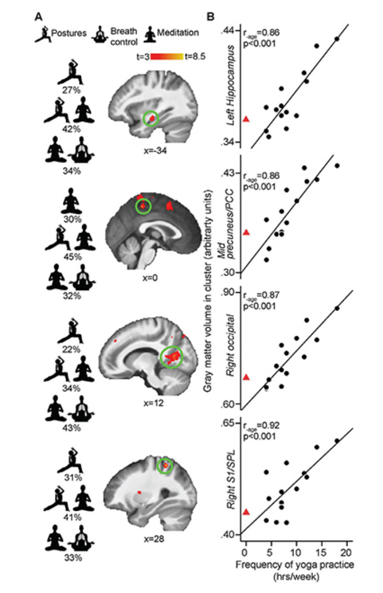
Hình 10.10 Một số vùng não nhất định có liên quan đến tần suất thực hành các bài tập gắn với yoga. Ví dụ, thể tích chất xám có liên quan đến tần suất tập yoga ở hồi hải mã bên trái. Do đó, những người tập thường xuyên nhất cho thấy thể tích hồi hải mã lớn nhất, gợi ý rằng yoga có thể mang lại một mức độ bảo vệ thần kinh nhất định trước sự lão hóa.
Nguồn: Villemure et al., 2015, xuất bản lần đầu bởi Frontiers, CC BY 4.0. Từ:
https://www.frontiersin.org/articles/10.3389/fnhum.2015.00281/full
Yoga có thể bảo vệ não khỏi tình trạng chết tế bào liên quan đến lão hóa. Các nhà khoa học từ Viện Y tế Quốc gia Hoa Kỳ và Đại học McGill ở Canada đã khảo sát những lợi ích liên quan đến tuổi tác của yoga ở những người tập lâu năm so với một nhóm đối chứng khỏe mạnh (Villemure et al., 2015). Trong nghiên cứu, họ sử dụng chụp cộng hưởng từ (MRI) cấu trúc để xem xét kỹ hơn sự khác biệt về chất xám giữa các nhóm.
Ở nhóm đối chứng gồm 14 người tham gia có hoạt động thể chất, các nhà khoa học nhận thấy chất xám ở những người lớn tuổi thấp hơn so với những người trẻ tuổi hơn, đây là kết quả đã được dự đoán trước. Đáng ngạc nhiên là nhóm tập yoga, cũng gồm 14 người tham gia, không cho thấy mối liên hệ nào giữa chất xám và tuổi tác. Thay vào đó, chất xám ở một số vùng não nhất định có liên quan đến số năm tập yoga cũng như thời lượng tập yoga hằng tuần (Hình 10.10). Như vậy, người tập yoga càng lâu năm và càng đều đặn thì các vùng não đó càng lớn (Villemure et al., 2015). Những kết quả này gợi ý rằng yoga có thể mang lại tác dụng bảo vệ thần kinh cho não bộ.
Yoga và thiền định đối với trí nhớ và nhận thức Lão hóa là một quá trình sinh lý được đánh dấu bởi sự suy giảm nhận thức, thường ảnh hưởng đến trung tâm trí nhớ và chức năng điều hành của não, nhưng các thực hành chiêm nghiệm được cho là có thể làm chậm hoặc ngăn ngừa sự suy giảm này. Cuộc Khảo sát Phỏng vấn Sức khỏe Quốc gia Hoa Kỳ đã hỏi người trưởng thành lý do họ tập yoga, và hơn 30% trả lời rằng họ tập yoga để cải thiện trí nhớ hoặc sự tập trung. Yoga và thiền định có mối liên hệ với sự cải thiện cả về nhận thức lẫn trí nhớ ở người lớn tuổi (Pandya, 2018; Prakash et al., 2012; Brandmeyer, Delorme and Wahbeh, 2019).
Các nhà khoa học từ Đại học Bang Wayne và Đại học Illinois đã khảo sát tác động của một chương trình can thiệp Hatha yoga kéo dài hai tháng đối với chức năng điều hành, sự chú ý và tốc độ xử lý ở 118 người lớn tuổi (Gothe, Kramer and McAuley, 2014, 2017). Các nhà khoa học cũng đưa vào một nhóm đối chứng tập kéo giãn để so sánh. Họ nhận thấy nhóm tập yoga có thời gian phản ứng nhanh hơn đáng kể, trí nhớ làm việc và chức năng điều hành tốt hơn so với nhóm đối chứng sau can thiệp. Nhóm tập yoga cũng cải thiện khả năng xử lý nhận thức và đối chiếu mẫu hình, cho thấy việc tập Hatha yoga đều đặn có thể mang lại lợi ích nhận thức trong quá trình lão hóa. Và những lợi ích này lớn hơn so với chỉ tập kéo giãn đơn thuần (Gothe, Kramer and McAuley, 2014, 2017).
Hiệu ứng tiếng Phạn Nhiều loại hình thực hành chiêm nghiệm liên quan đến việc ghi nhớ và lặp lại một câu thần chú (mantra) cụ thể, chẳng hạn như các văn bản truyền khẩu bằng tiếng Phạn. Các nhà khoa học thần kinh từ Đại học Trento ở Ý tự hỏi liệu thực hành này có thể tăng cường tư duy và trí nhớ hay không (Hartzell et al., 2016). Để nghiên cứu “hiệu ứng tiếng Phạn” lên não bộ, các nhà khoa học đã tuyển chọn các học giả Vệ Đà (những học giả Ấn Độ giáo được đào tạo để ghi nhớ các văn bản truyền khẩu) từ các trường học quanh Delhi, Ấn Độ và ghép cặp họ với nhóm đối chứng có cùng độ tuổi, giới tính, tay thuận, mắt thuận và khả năng đa ngôn ngữ. Sau đó, họ sử dụng chẩn đoán hình ảnh não để tìm kiếm sự khác biệt về kích thước của các vùng não khác nhau giữa hai nhóm.
Các nhà khoa học nhận thấy các học giả Vệ Đà có nhiều vùng não, bao gồm cả hồi hải mã, lớn hơn đáng kể so với nhóm đối chứng tương ứng. Nhìn chung, các học giả này cũng có lượng chất xám—nơi chứa thân tế bào thần kinh—nhiều hơn khoảng 10% so với nhóm đối chứng trên cả hai bán cầu não. Các nhà nghiên cứu tin rằng lượng chất xám nhiều hơn có thể liên quan đến chức năng nhận thức được tăng cường (Hartzell et al., 2016). Tiếp theo, các nhà nghiên cứu dự định kiểm tra xem sự gia tăng thể tích hồi hải mã ở các học giả Vệ Đà có thể giúp làm chững lại tác động của bệnh Alzheimer hay không.
Một nghiên cứu khác do các nhà nghiên cứu tại Đại học California, Los Angeles thực hiện đã khám phá tác động của yoga đối với sự suy giảm nhận thức, đồng thời xem xét khả năng kết nối giữa các tế bào thần kinh (Eyre et al., 2016). Những người tham gia nghiên cứu từ 55 tuổi trở lên và bị suy giảm nhận thức nhẹ. Suy giảm nhận thức nhẹ là tình trạng suy giảm nhận thức nghiêm trọng hơn mức thường xảy ra trong quá trình lão hóa thông thường, nhưng ít nghiêm trọng hơn mức quan sát thấy ở chứng sa sút trí tuệ. Tình trạng này được đặc trưng bởi các vấn đề về trí nhớ, ngôn ngữ hoặc nhận thức. Trong nghiên cứu, 14 người được phân vào nhóm can thiệp yoga và 11 người được phân vào nhóm rèn luyện tăng cường trí nhớ. Cả hai can thiệp đều kéo dài ba tháng. Sau đó, hình ảnh học não bộ được sử dụng để lập bản đồ mối liên hệ giữa các mạng lưới não và hiệu suất trí nhớ.
Các nhà khoa học nhận thấy nhóm tập yoga thể hiện sự cải thiện đáng kể về trí nhớ thị giác – không gian và mức độ trầm cảm khi so sánh với nhóm đối chứng làm bài tập trí nhớ. Hiệu suất trí nhớ ngôn từ được cải thiện có liên quan đến sự gia tăng kết nối giữa nhiều mạng lưới não, vỏ não đai, vỏ não trán và vỏ não chẩm. Hiệu suất trí nhớ ngôn từ được cải thiện tương quan với sự gia tăng kết nối giữa mạng lưới xử lý ngôn ngữ và một phần nhỏ của vỏ não trán gọi là hồi trán dưới. Các cơ chế nền tảng cho sự cải thiện nhận thức này vẫn chưa được biết rõ, nhưng có thể là do sự gia tăng lưu lượng máu (và nhờ đó là dưỡng chất cùng oxy) xảy ra trong quá trình thực hành vận động.
Các mạng lưới não Thiền định có thể mang lại một khả năng khác để thúc đẩy quá trình lão hóa khỏe mạnh. Một trong những mạng lưới não bị ảnh hưởng bởi lão hóa là mạng lưới chế độ mặc định (default mode network), vốn liên quan đến sự lang thang tâm trí, tự phản ánh và nội cảm (khả năng cảm nhận trạng thái bên trong cơ thể). Mạng lưới chế độ mặc định được kích hoạt khi một người không tham gia vào một nhiệm vụ hay hoạt động nào và trở nên ít hoạt động hơn khi não tham gia vào một nhiệm vụ có định hướng mục tiêu, như thiền định.
Khoảng 80–90% năng lượng của não được sử dụng khi mạng lưới chế độ mặc định hoạt động và não không thực hiện bất kỳ nhiệm vụ cụ thể nào (Chen and Zhang, 2021). Do đó, não đang xử lý khối lượng thông tin lớn, đòi hỏi nhiều năng lượng, ngay cả khi không chính thức tham gia vào một nhiệm vụ. Mạng lưới chế độ mặc định liên quan đến sự kích hoạt đồng thời của nhiều vùng não khác nhau, bao gồm một phần vỏ não trước trán, vỏ não đai sau, hồi trước chêm, và các phần của thùy đỉnh và thùy thái dương (Ramírez-Barrantes et al., 2019). Khi mạng lưới chế độ mặc định trở nên ít hoạt động hơn, một mạng lưới khác gọi là mạng lưới chú ý lưng (dorsal attention network) trở nên hoạt động mạnh hơn. Mạng lưới chú ý lưng tham gia vào sự chú ý tập trung (Devaney et al., 2021).
Các nhà nghiên cứu từ Trường Y Harvard và Đại học Boston đã sử dụng hình ảnh học não bộ để kiểm tra sự khác biệt trong kích hoạt mạng lưới giữa những người thiền Vipassana lâu năm (thiền chú tâm) và nhóm đối chứng tương ứng (Devaney et al., 2021). Những người tham gia thực hiện hai nhiệm vụ chú ý trong khi chụp quét, trong lúc các nhà khoa học quan sát vùng não nào đang được sử dụng. Bằng cách kiểm tra vùng não nào được kích hoạt, các nhà nghiên cứu nhận thấy những người thiền lâu năm có khả năng điều hòa mạng lưới chế độ mặc định và mạng lưới chú ý lưng tốt hơn đáng kể so với nhóm đối chứng (Devaney et al., 2021).
Các nhà khoa học cũng quét não của người tham gia khi nghỉ ngơi để xem xét khả năng kết nối giữa các vùng não khác nhau. Một lần nữa, những người hành thiền có thể chuyển đổi giữa mạng lưới chế độ mặc định và mạng lưới chú ý lưng dễ dàng hơn so với nhóm đối chứng (Devaney et al., 2021). Tương tự cách hệ thần kinh giao cảm và phó giao cảm phối hợp với nhau để mang lại sự cân bằng cho cơ thể, mạng lưới chế độ mặc định và mạng lưới chú ý lưng giúp duy trì cân bằng nội môi và sức khỏe não bộ. Sự linh hoạt trong khả năng chuyển đổi giữa mạng lưới chế độ mặc định và mạng lưới chú ý lưng có thể là một lợi ích sức khỏe lâu dài của việc thực hành thiền định (Devaney et al., 2021).
Khả năng điều hòa mạng lưới chế độ mặc định cũng có thể mang lại tác dụng bảo vệ thần kinh trước sự lão hóa (Ramírez-Barrantes et al., 2019). Thiền định làm tăng siêu nhận thức (meta-awareness), một khả năng nhận thức có liên quan đến mạng lưới chế độ mặc định. Mặc dù có nhiều loại hình thiền khác nhau, hầu hết đều bao gồm sự tập trung ổn định, thư giãn vào khoảnh khắc hiện tại.
Một nghiên cứu do các nhà nghiên cứu tại Đại học Massachusetts và Đại học Yale thực hiện cũng phát hiện ra rằng thiền định dẫn đến việc giảm hoạt động của mạng lưới chế độ mặc định rất lâu sau khi kết thúc bài thiền (Garrison et al., 2015). Phát hiện này gợi ý rằng bộ não vẫn duy trì trạng thái tập trung sau khi buổi thiền kết thúc và có thể giải thích tại sao thiền định giúp kiềm chế sự lang thang tâm trí và suy nghĩ liên quan đến bản thân (Garrison et al., 2015).
Hoạt động của mạng lưới chế độ mặc định giảm xuống có liên quan đến hiệu suất nhận thức được cải thiện, trong khi hoạt động của mạng lưới chế độ mặc định tăng lên lại gắn liền với hàng loạt tình trạng sức khỏe tâm thần, bao gồm lo âu, trầm cảm và nghiện ngập (Coutinho et al., 2015; Zhang and Volkow, 2019).
Sự lang thang tâm trí là một đặc điểm nổi bật của nhiều tình trạng trong số này, đặc biệt là lo âu (Seli et al., 2019). Vì vậy, thiền định có thể giúp thúc đẩy sức khỏe tâm thần và cải thiện chức năng nhận thức.
Những lưu ý dành cho người tập yoga lớn tuổi Hệ thống cảm nhận bản thể (proprioception) và hệ tiền đình thay đổi trong quá trình lão hóa, điều này có thể gây chóng mặt và các vấn đề về thăng bằng (Piitulainen et al., 2018). Những thay đổi này khiến người lớn tuổi có nguy cơ té ngã và chấn thương cao hơn. Khoảng 30% người trên 60 tuổi gặp phải các triệu chứng này (Brosel and Strupp, 2019).
An toàn là ưu tiên hàng đầu khi thiết kế các lớp yoga cho người lớn tuổi. Hãy cân nhắc những lớp học có nhịp độ chậm hơn với sự chú trọng nhiều hơn vào định tuyến tư thế, chẳng hạn như yoga nhẹ nhàng, yoga phục hồi hoặc yoga ghế. Yoga ghế đang trở nên phổ biến tại Hoa Kỳ đối với người lớn tuổi, những người có bệnh lý và những người đang hồi phục sau chấn thương. Nhiều phòng tập và dịch vụ phát trực tuyến cung cấp các lớp yoga ghế.
VÍ DỤ CHUỖI BÀI TẬP YOGA GHẾ CHO NGƯỜI LỚN TUỔI
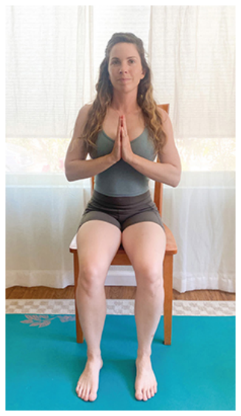
Hình 10.11 Tư thế chắp tay ngồi.
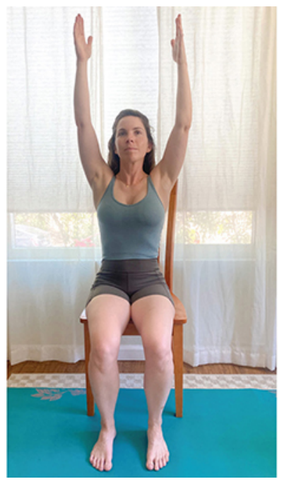
Hình 10.12 Duỗi tay qua đầu.
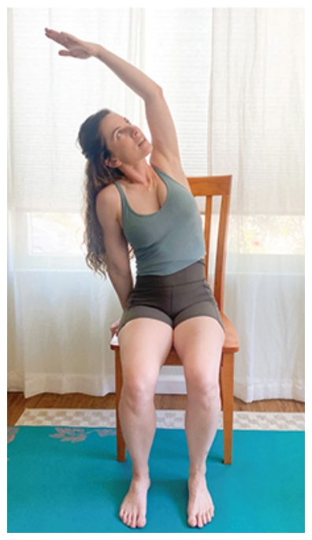
Hình 10.13 Ngồi nghiêng lườn.
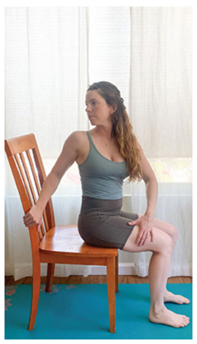
Hình 10.14 Vặn xoắn cột sống có hỗ trợ.
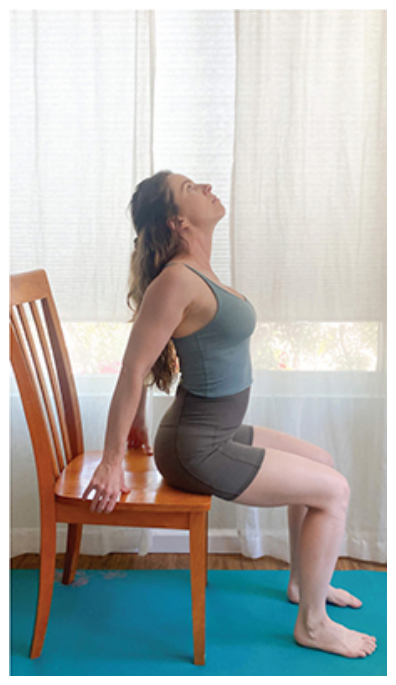
Hình 10.15 Biến thể tư thế con bò có tay hỗ trợ.
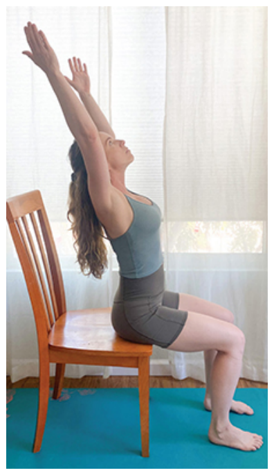
Hình 10.16 Biến thể tư thế mở ngực.
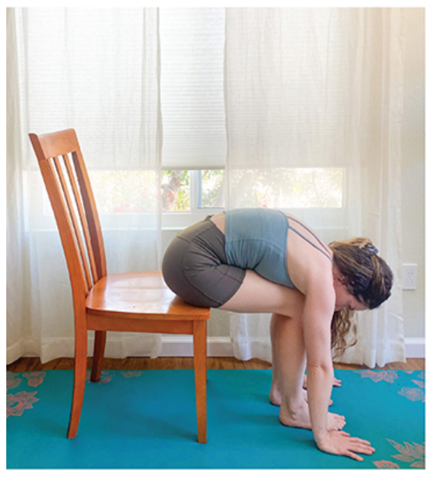
Hình 10.17 Tư thế ngồi gập người về trước.
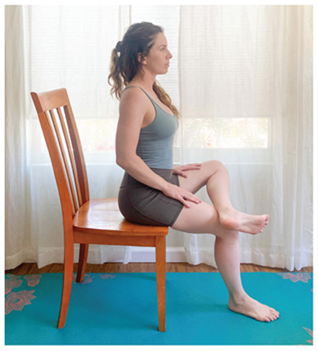
Hình 10.18 Biến thể tư thế bồ câu.
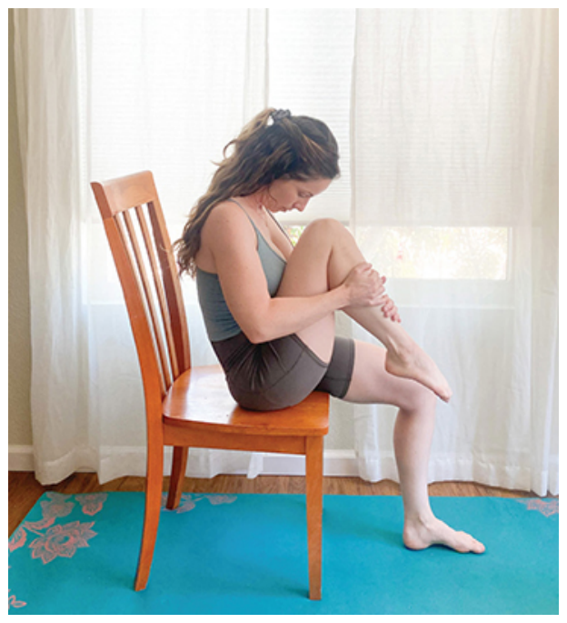
Hình 10.19 Tư thế mũi chạm gối.
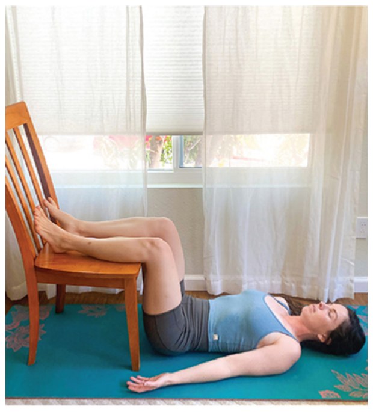
Hình 10.20 Biến thể tư thế xác chết sử dụng ghế để nâng và đỡ chân.
Các nhà nghiên cứu hiện đang khảo sát tác động của từng tư thế riêng lẻ đối với người lớn tuổi. Trong một nghiên cứu gần đây, các nhà khoa học tại Đại học Nam California đã sử dụng các phương pháp cơ sinh học để kiểm tra góc khớp, lực và hoạt động cơ bắp của 21 tư thế Hatha yoga ở 20 người trưởng thành có độ tuổi trung bình là 70 (Salem et al., 2013). Các nhà khoa học nhận thấy một số tư thế tạo ra tải trọng lặp đi lặp lại lên cùng một khớp và nhóm cơ. Trong khi một số tư thế khó hơn, các biến thể điều chỉnh không phải lúc nào cũng trực quan. Phát hiện của họ nhấn mạnh tầm quan trọng của việc cung cấp một bài tập yoga cân bằng với nhiều tư thế đa dạng cũng như đưa ra các biến thể điều chỉnh rõ ràng và dễ tiếp cận trong lớp học. Những nghiên cứu như thế này có thể giúp định hướng các chương trình yoga hiệu quả hơn trong tương lai.
Những điểm chính cần ghi nhớ
Yoga, thiền định và một chế độ ăn uống lành mạnh có thể mang lại sự bảo vệ đáng kể trước sự suy giảm nhận thức liên quan đến lão hóa.
Tập thể dục làm tăng nhịp tim, giúp cải thiện lưu lượng máu đi khắp cơ thể, bao gồm cả não bộ. Lưu lượng máu tốt hơn làm tăng sự lưu thông dưỡng chất và giảm viêm. Bộ não có thể tạo ra các tế bào thần kinh mới cho đến tận cuối đời trong một quá trình gọi là sinh thần kinh. Tuy nhiên, quá trình sinh thần kinh có thể chỉ xảy ra ở hồi hải mã, nếu có. Yoga và thiền định có mối liên hệ với sự cải thiện cả về nhận thức lẫn trí nhớ ở người lớn tuổi. Thực hành thiền định có thể giúp các cá nhân điều hòa mạng lưới chú ý và mạng lưới trạng thái nghỉ của não, điều này có thể bảo vệ thần kinh trước sự lão hóa. An toàn là ưu tiên hàng đầu khi thiết kế lớp yoga cho người lớn tuổi vì hệ thống cảm nhận bản thể và hệ tiền đình của họ thay đổi trong quá trình lão hóa, dễ gây chóng mặt và các vấn đề về thăng bằng.
CHẾ ĐỘ ĂN YOGA VÀ SỨC KHỎE NÃO BỘ
Các thực hành chiêm nghiệm gắn liền với lối sống lành mạnh hơn. Những người tập yoga và thiền định thường chú trọng đến sức khỏe, điều này ngay từ đầu có thể đã dẫn dắt họ đến với yoga và thiền định. Ngoài ra, khái niệm “không làm hại” trong yoga khiến nhiều người ăn ít sản phẩm từ động vật hơn để không làm hại động vật và môi trường. Ăn một chế độ giàu thực phẩm toàn phần, chưa qua chế biến mang lại hàng loạt lợi ích sức khỏe, bao gồm hạ cholesterol, giảm cân nặng, hạ huyết áp và đường huyết; giảm nguy cơ ung thư và tiểu đường; đảo ngược xơ vữa động mạch; giảm viêm trong cơ thể; và cải thiện sức khỏe tâm lý nhờ đưa ra những lựa chọn lành mạnh hơn (Barnard et al., 2019).
Thực phẩm cho não bộ: chế độ ăn MIND
Rất nhiều nghiên cứu đã được thực hiện về chế độ ăn tốt nhất cho sức khỏe não bộ, và một trong những kế hoạch dinh dưỡng phổ biến và thành công nhất là chế độ ăn MIND. Chế độ ăn MIND, do các nhà nghiên cứu tại Đại học Harvard và Đại học Rush sáng tạo, là một chế độ ăn dựa trên thực vật tập trung vào các thực phẩm ít qua chế biến hoặc chưa qua chế biến. Chế độ ăn này xoay quanh việc tiêu thụ ngũ cốc nguyên hạt (như hạt diêm mạch hoặc yến mạch), trái cây, rau củ, các loại đậu, các loại hạt và quả mọng. Gia cầm và cá có thể ăn mỗi tuần một lần, và nên dùng dầu ô liu thay cho bơ.
Các nhà nghiên cứu đã chỉ ra rằng bằng cách tuân theo chế độ ăn MIND, nguy cơ phát triển chứng sa sút trí tuệ, bệnh Alzheimer và các dạng suy giảm nhận thức liên quan đến tuổi tác khác sẽ giảm xuống (Morris et al., 2015a,b; Berendsen et al., 2017). Các loại thực phẩm như cải xoăn, rau chân vịt và cải rổ chứa đầy dưỡng chất như folate, vitamin E và flavonoid, được cho là giúp làm chậm quá trình lão hóa não. Ăn các loại quả mọng như việt quất và dâu tây cũng đã được chứng minh là làm giảm tốc độ suy giảm nhận thức (Devore et al., 2012). Các loại hạt là một thực phẩm giàu dinh dưỡng khác chứa nhiều vitamin E với đặc tính bảo vệ não. Các thực phẩm giàu protein và chất xơ như đậu, đậu lăng và đậu nành rất giàu vitamin nhóm B giúp giữ cho não bộ khỏe mạnh.
Mẹo để bắt đầu
Hãy bắt đầu với “Thứ Hai không thịt” và thử nấu một bữa ăn thuần thực vật vào mỗi thứ Hai. Mua một cuốn sách dạy nấu ăn lành mạnh để lấy cảm hứng. Tìm một người bạn đồng hành để bạn có thể trao đổi về tiến trình ăn uống lành mạnh của mình. Sử dụng trái cây và rau củ đông lạnh khi bạn bận rộn. Chúng thường được cấp đông nhanh, giúp bảo toàn dưỡng chất. Lập một kế hoạch hành động về việc ăn uống của bạn, bao gồm việc bạn sẽ nấu món thuần thực vật nào và vào lúc nào.
Ăn uống vì sức khỏe và ahimsa
Nhiều vận động viên đỉnh cao, như các ngôi sao quần vợt Serena và Venus Williams, vận động viên chạy siêu marathon Scott Jurek và vận động viên thể hình Patrik Baboumian, đã chuyển sang chế độ ăn dựa trên thực vật để nâng cao thành tích thể thao. Tuân theo chế độ ăn dựa trên thực vật có thể giảm cân nặng và tỷ lệ mỡ cơ thể cũng như tăng cường sức bền thể thao (Barnard et al., 2005, 2019). Những người tập yoga tham gia hoặc giảng dạy nhiều lớp một ngày hoặc tham gia các lớp học kéo dài có thể hưởng lợi từ việc ăn uống dựa trên thực vật. Chế độ ăn dựa trên thực vật giúp cải thiện sức khỏe tim mạch, vốn rất quan trọng để bơm máu, dưỡng chất và oxy đi khắp cơ thể (Kim et al., 2019). Chế độ ăn dựa trên thực vật cũng hỗ trợ phục hồi bằng cách giảm viêm hệ thống (Barnard et al., 2019; Naclerio et al., 2020). Tập luyện tạo ra các sản phẩm phụ gọi là gốc tự do gây viêm, đặc biệt khi tập luyện cường độ cao. Sự tích tụ các gốc tự do, gọi là stress oxy hóa, có thể dẫn đến tổn thương tế bào và mô theo thời gian. Một chế độ ăn dựa trên thực vật cân bằng chứa đầy chất chống oxy hóa có thể giúp giảm tình trạng viêm này và đẩy nhanh quá trình phục hồi.
Việc ăn ít sản phẩm từ động vật và thực hành yoga cũng có sự giao thoa về mặt triết lý. Ví dụ, trong Kinh Yoga của Patanjali (The Yoga Sutras of Patanjali), Patanjali liệt kê tám nhánh của yoga, vốn là những nguyên tắc đạo đức trong đời sống. Tám nhánh bao gồm các yama (những điều nên tránh) và các niyama (những điều nên làm). Thực hành theo tám nhánh được cho là đưa người tập yoga đến gần hơn với sự giác ngộ và kết nối với thế giới.
Một trong các yama được gọi là ahimsa hay bất bạo động. Khái niệm ahimsa có nghĩa là không làm hại người khác, cả về thể chất lẫn lời nói, và nhiều người tin rằng điều này bao gồm cả động vật. Một cách để thực hành bất bạo động đối với động vật là tiêu thụ ít hơn hoặc không tiêu thụ các sản phẩm từ động vật.
Những điểm chính cần ghi nhớ
Ăn một chế độ giàu thực phẩm toàn phần, chưa qua chế biến mang lại hàng loạt lợi ích sức khỏe, bao gồm hạ cholesterol, giảm cân nặng, hạ huyết áp và đường huyết. Chế độ ăn MIND có thể giúp giảm nguy cơ phát triển chứng sa sút trí tuệ, bệnh Alzheimer và các dạng suy giảm nhận thức liên quan đến tuổi tác khác. Chế độ ăn dựa trên thực vật có thể hỗ trợ phục hồi bằng cách giảm viêm hệ thống.
KHOA HỌC THẦN KINH VỀ GIẤC NGỦ VÀ YOGA NIDRA
Khi tuổi tác tăng lên, các mô hình giấc ngủ bắt đầu thay đổi. Giấc ngủ không chỉ ảnh hưởng đến não bộ mà còn ảnh hưởng đến cách cơ thể lão hóa. Các nghiên cứu đã chỉ ra rằng ngủ ít vào ban đêm có liên quan đến tình trạng chết tế bào não do tuổi tác và suy giảm nhận thức ở người lớn tuổi (Gorgoni and De Gennaro, 2021). Thiếu ngủ có thể gây ra những thay đổi về tính dẻo của não và chức năng nhận thức.
Nhịp sinh học cũng trở nên kém đồng bộ hơn theo tuổi tác, và việc ngủ trưa ban ngày trở nên phổ biến hơn (Gorgoni and De Gennaro, 2021). Lão hóa có thể gây suy giảm chất lượng và thời lượng giấc ngủ, nhưng giấc ngủ yoga gọi là yoga nidra, được thảo luận dưới đây, có thể mang lại lợi ích cho những người gặp vấn đề về giấc ngủ.
Giấc ngủ là gì? Một người trung bình dành khoảng một phần ba cuộc đời để ngủ, tương đương 33 năm ngủ nếu họ sống đến 100 tuổi (Kraftl and Horton, 2008). Các nhà khoa học mới chỉ hiểu một phần lý do con người cần ngủ, và họ hiện đang khám phá những gì diễn ra trong khi ngủ ở cấp độ phân tử. Bất chấp khoảng trống trong kiến thức khoa học này, giấc ngủ rõ ràng là cần thiết để duy trì hoạt động vì thiếu ngủ có thể dẫn đến tử vong.
Nhịp sinh học điều hòa chu kỳ thức – ngủ và diễn ra mỗi 24 giờ. Quá trình này liên quan đến một vài vùng của não, bao gồm vùng dưới đồi và tuyến tùng. Khi ánh sáng chiếu vào mắt, các tín hiệu được gửi đến một nhóm tế bào thần kinh ở vùng dưới đồi gọi là nhân trên chéo (suprachiasmatic nucleus) (Hình 10.21). Nếu mắt cảm nhận bóng tối, các tế bào thần kinh nhân trên chéo sẽ ra hiệu cho tuyến tùng sản xuất melatonin để thúc đẩy cơn buồn ngủ. Trong khi ngủ, các tế bào thần kinh gửi tín hiệu cho nhau theo các mô hình sóng. Các mô hình sóng tín hiệu khác nhau đại diện cho bốn giai đoạn khác nhau của giấc ngủ (Hình 10.22) và có thể được các nhà nghiên cứu đo lường bằng điện não đồ (EEG).
Hai giai đoạn đầu tiên là giấc ngủ nông. Giai đoạn thứ ba của giấc ngủ là giấc ngủ sâu, được cho là quan trọng đối với việc nghỉ ngơi và phục hồi. Giai đoạn cuối cùng được gọi là giấc ngủ chuyển động mắt nhanh (REM). Trong giấc ngủ REM, mắt chuyển động nhanh, các cơ thư giãn và giấc mơ xuất hiện. Cũng rất khó để tỉnh giấc trong giấc ngủ REM.
Bộ não đi qua cả bốn giai đoạn của giấc ngủ nhiều lần suốt đêm. Mặc dù các nhà khoa học chưa tìm ra chính xác lý do tại sao giấc ngủ lại quan trọng đối với sức khỏe, nghiên cứu gần đây gợi ý rằng giấc ngủ có thể là khoảng thời gian bộ não sửa chữa tổn thương và đào thải độc tố (Cao et al., 2020). Giấc ngủ cũng có thể là giai đoạn bộ não củng cố các đường dẫn thần kinh để làm vững chắc ký ức (Stickgold, 2005).
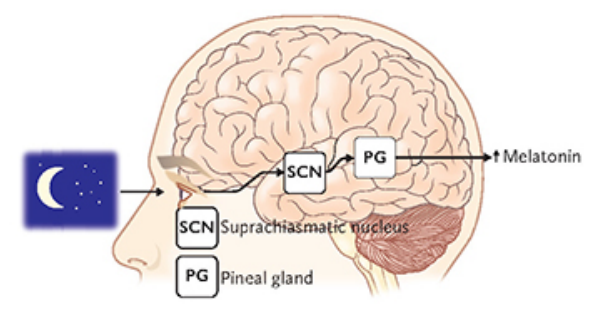
Hình 10.21 Khi mắt cảm nhận bóng tối, các tế bào thần kinh ở nhân trên chéo của vùng dưới đồi gửi tín hiệu đến tuyến tùng. Tuyến tùng sau đó sản xuất melatonin để thúc đẩy cơn buồn ngủ.
Hình 10.22 Bốn giai đoạn chính của giấc ngủ, bao gồm giai đoạn đi vào giấc ngủ, giấc ngủ nông, giấc ngủ sâu và giấc ngủ REM.
Thiền định cho giấc ngủ
Thiền định là một công cụ hữu ích để cải thiện giấc ngủ (Ong et al., 2014). Một hình thức thiền định gọi là yoga nidra đã được chứng minh là đặc biệt hiệu quả trong việc thúc đẩy giấc ngủ và sự thư giãn đồng thời làm giảm căng thẳng và lo âu (Sharpe et al., 2020; Moszeik, von Oertzen and Renner, 2020; Dol, 2019). Yoga nidra, còn được gọi là giấc ngủ yoga, thường được thực hiện ở tư thế nằm trong savasana (tư thế xác chết) trong khi giáo viên dùng giọng nói dẫn dắt học viên đi qua các trạng thái thư giãn và giấc ngủ (Parker, Bharati and Fernandez, 2013).
Không cần phải tập thiền quá nhiều mới thấy kết quả. Các nghiên cứu đã chỉ ra rằng ngay cả một giờ tập yoga nidra hai lần một tuần cũng có thể làm giảm đáng kể các triệu chứng căng thẳng và cải thiện lòng tự trọng (Dol, 2019). Yoga nidra cũng có thể hiệu quả hơn đôi chút trong việc giảm các triệu chứng lo âu so với các hình thức thiền ngồi (Ferreira-Vorkapic et al., 2018).
Nhiều nghiên cứu về yoga nidra đã được thực hiện bằng một hình thức giấc ngủ yoga gọi là iRest. Được phát triển bởi nhà nghiên cứu kiêm nhà tâm lý học lâm sàng Richard Miller, iRest là một “thực hành thiền định dựa trên truyền thống cổ xưa của yoga nidra và được điều chỉnh để phù hợp với điều kiện của đời sống hiện đại” (iRest, 2022). iRest có thể làm dịu các triệu chứng trầm cảm và lo âu bên cạnh việc cải thiện giấc ngủ (Wahbeh and Nelson, 2019; Livingston and ColletteMerrill, 2018). Phương pháp này hiện cũng được quân đội Hoa Kỳ phê duyệt để sử dụng như một liệu pháp y học bổ sung và thay thế cho chứng rối loạn căng thẳng sau sang chấn và kiểm soát cơn đau (Livingston and Collette-Merrill, 2018).
Yoga nidra Hãy nằm xuống ở một tư thế thoải mái. Nhẹ nhàng nhắm mắt và khép miệng nếu thấy dễ chịu, rồi bắt đầu hít vào và thở ra qua mũi. Hướng sự tập trung vào những âm thanh của thế giới xung quanh bạn. Hình dung cơ thể bạn đang nằm nghỉ trên mặt đất và nhận biết sự hiện diện thể chất của mình. Bây giờ, hãy bắt đầu hướng vào bên trong, sâu trong cơ thể bạn. Tìm nơi bên trong mà bạn cảm thấy bình yên và an toàn. Dành một khoảnh khắc đắm mình trong cảm giác của chốn bình yên nội tâm này. Bạn có thể quay trở lại nơi này vào bất kỳ lúc nào trong buổi thực hành. Nó ở ngay đây. Nó là của bạn. Từ từ, bắt đầu đưa nhận thức trở lại cơ thể vật lý của bạn.
Cảm nhận toàn bộ sự hiện diện thể chất kết nối của bạn trên sàn nhà.
Cảm nhận hơi thở đi vào cơ thể qua hai lỗ mũi. Cố gắng theo dõi hơi thở khi nó đi xuống khí quản vào phổi rồi quay ngược trở lên và ra ngoài qua hai lỗ mũi. Cảm thấy tràn đầy năng lượng khi hít vào và đón nhận sự thư giãn khi thở ra. Không phán xét, hãy đưa nhận thức đến bất kỳ cảm xúc hay cảm giác nào bạn đang trải qua trong khoảnh khắc hiện tại. Ghi nhận bất kỳ sự căng thẳng hay áp lực nào. Và rồi cố gắng gợi lại cảm giác bình yên nội tâm mà bạn đã trải nghiệm trước đó. Cho phép sự bình an thay thế căng thẳng. Hãy để căng thẳng trôi ra khỏi cơ thể.
Bây giờ hãy gợi lên một ký ức chất chứa niềm vui. Chú ý đến từng chi tiết của ký ức này và để nó lấp đầy bạn bằng hơi ấm. Nán lại trong hơi ấm này. Thấm đẫm nó. Một lần nữa, bắt đầu quay trở lại với hơi thở. Trở lại với cơ thể vật lý. Nhận biết cơ thể bạn đang cảm thấy thế nào. Nhận thức về căn phòng xung quanh bạn và cách cơ thể bạn hòa hợp trong không gian đó.
Khi bạn đã sẵn sàng, hãy bắt đầu cử động nhẹ các ngón tay và ngón chân, quay trở về khoảnh khắc hiện tại. Chào mừng bạn trở lại.
Những điểm chính cần ghi nhớ
Giấc ngủ thay đổi khi chúng ta già đi và có thể ảnh hưởng đến cảm nhận cũng như quá trình lão hóa của chúng ta. Bộ não đi qua bốn giai đoạn của giấc ngủ nhiều lần suốt đêm. Các nhà khoa học tin rằng giấc ngủ có thể là khoảng thời gian bộ não sửa chữa tổn thương và đào thải độc tố. Yoga nidra có thể thúc đẩy giấc ngủ và sự thư giãn đồng thời làm giảm căng thẳng và lo âu.
TÀI LIỆU THAM KHẢO
Arain, M., Haque, M., Johal, L., Mathur, P., et al., 2013. Maturation of the adolescent brain.
Neuropsychiatric Disease and Treatment, 9, pp.449–461. Barnard, N. Goldman, D.M., Loomis, J.F., Kahleova, H., et al., 2019. Plant-based diets for cardiovascular safety and performance in endurance sports. Nutrients, 11(1), p.130. Barnard, N.D., Scialli, A.R., Turner-McGrievy, G., Lanou, A.J., & Glass, J., 2005. The effects of a low-fat, plant-based dietary intervention on body weight, metabolism, and insulin sensitivity. The American Journal of Medicine, 118(9), pp.991–997. Beauchemin, J., Hutchins, T.L., & Patterson, F., 2008. Mindfulness meditation may lessen anxiety, promote social skills, and improve academic performance among adolescents with learning disabilities. Complementary Health Practice Review, 13(1), pp.34–45. Berendsen, A.M., Kang, J.H., Feskens, E.J.M., de Groot, C.P.G.M., Grodstein, F., & van de Rest, O.,
2017. Association of long-term adherence to the MIND diet with cognitive function and cognitive decline in American women. The Journal of Nutrition, Health & Aging, 22(2), pp.222–229. Black, D.S., & Fernando, R., 2013. Mindfulness training and classroom behavior among lower income and ethnic minority elementary school children. Journal of Child and Family Studies, 23(7), pp.1242–1246. Brandmeyer, T., Delorme, A., & Wahbeh, H., 2019. The neuroscience of meditation: classification, phenomenology, correlates, and mechanisms. Progress in Brain Research, 244, pp.1–29. Brosel, S., & Strupp, M., 2019. The vestibular system and ageing. Subcellular Biochemistry, 91, pp.195–225. Cao, J., Herman, A.B., West, G.B., Pao, G., & Savage, V.M., 2020. Unraveling why we sleep:
quantitative analysis reveals abrupt transition from neural reorganization to repair in early development. Science Advances, 6(38), eaba0398. Centers for Disease Control and Prevention (CDC), 2022. How much physical activity do adults need? Available at: www.cdc.gov/physicalactivity/basics/adults/index.htm Cerrillo-Urbina, A.J., García-Hermoso, A., Sánchez-López, M., Pardo-Guijarro, M.J., Santos Gómez,
J.L., & Martínez-Vizcaíno, V., 2015. The effects of physical exercise in children with attention deficit hyperactivity disorder: a systematic review and meta-analysis of randomized control trials. Child: Care, Health and Development, 41(6), pp.779–788. Chen, Y., & Zhang, J., 2021. How energy supports our brain to yield consciousness: insights from neuroimaging based on the neuroenergetics hypothesis. Frontiers in Systems Neuroscience, 15, 648860. Ching, H.-H., Koo, M., Tsai, T.-H., & Chen, C.-Y., 2015. Effects of a mindfulness meditation course on learning and cognitive performance among university students in Taiwan. Evidence-Based Complementary and Alternative Medicine, 2015, pp.1–7. Coutinho, J.F., Fernandes, S.V., Soares, J.M., Maia, L., Gonçalves, Ó.F., & Sampaio, A., 2015.
Default mode network dissociation in depressive and anxiety states. Brain Imaging and Behavior, 10(1), pp.147–157. Cressman, V.L., Balaban, J., Steinfeld, S., Shemyakin, A., et al., 2010. Prefrontal cortical inputs to the basal amygdala undergo pruning during late adolescence in the rat. The Journal of Comparative Neurology, 518(14), pp.2693–2709. Devaney, K., Levin, E.J., Tripathi, V., Higgins, J.P., Lazar, S.W., & Somers, D.C., 2021. Attention and default mode network assessments of meditation experience during active cognition and rest. Brain Sciences, 11(5), p.566.
Devore, E.E., Kang, J.H., Breteler, M.M.B., & Grodstein, F., et al., 2012. Dietary intakes of berries and flavonoids in relation to cognitive decline. Annals of Neurology, 72(1), pp.135–143. Ditto, B., Eclache, M., & Goldman, N., 2006. Short-term autonomic and cardiovascular effects of mindfulness body scan meditation. Annals of Behavioral Medicine, 32(3), pp.227–234. Dol, K.S., 2019. Effects of a yoga nidra on the life stress and self-esteem in university students.
Complementary Therapies in Clinical Practice, 35, pp.232–236. Donahoe-Fillmore, B., & Grant, E., 2019. The effects of yoga practice on balance, strength, coordination and flexibility in healthy children aged 10–12 years. Journal of Bodywork and Movement Therapies, 23(4), pp.708–712. Erickson, K.I., Leckie, R.L., & Weinstein, A.M., 2014. Physical activity, fitness, and gray matter volume. Neurobiology of Aging, 35(Supplement 2), S20–S28. Eriksson, P.S., Perfilieva, E., Björk-Eriksson, T., Albron, A.-M., et al., 1998. Neurogenesis in the adult human hippocampus. Nature Medicine, 4(11), pp.1313–1317. Eyre, H.A., Acevedo, B., Yang, H., Siddarth, P., et al., 2016. Changes in neural connectivity and memory following a yoga intervention for older adults: a pilot study. Journal of Alzheimer’s Disease, 52(2), pp.673–684. Ferreira-Vorkapic, C., Borba-Pinheiro, C.J., Marchioro, M., & Santana, D., 2018. The impact of yoga nidra and seated meditation on the mental health of college professors. International Journal of Yoga, 11(3), p.215. Franjic, D., Skarica, M., Ma, S., Arellano, J.I., et al., 2022. Transcriptomic taxonomy and neurogenic trajectories of adult human, macaque, and pig hippocampal and entorhinal cells. Neuron, 110(3), pp.452–469.e14. Gage, F.H., 2019. Adult neurogenesis in mammals. Science, 364(6443), pp.827–828. Gard, T., Brach N., Hölzel, B.K., Noggle, J.J., Conboy, L.A., & Lazar, S.W., 2012. Effects of a yoga based intervention for young adults on quality of life and perceived stress: the potential mediating roles of mindfulness and self-compassion. The Journal of Positive Psychology, 7(3), pp.165–175. Garrison, K.A., Zeffiro, T.A., Scheinost, D., Constable, R.T., & Brewer, J.A., 2015. Meditation leads to reduced default mode network activity beyond an active task. Cognitive, Affective, & Behavioral Neuroscience, 15(3), pp.712–720. Gilmore, J.H., Knickmeyer, R.C., & Gao, W., 2018. Imaging structural and functional brain development in early childhood. Nature Reviews Neuroscience, 19(3), pp.123–137. Gorgoni, M., & De Gennaro, L., 2021. Sleep in the aging brain. Brain Sciences, 11(2), p.229. Gothe, N.P., Kramer, A.F., & McAuley, E., 2014. The effects of an 8-week Hatha yoga intervention on executive function in older adults. The Journals of Gerontology: Series A, 69(9), pp.1109– 1116. Gothe, N.P., Kramer, A.F., & McAuley, E., 2017. Hatha yoga practice improves attention and processing speed in older adults: results from an 8-week randomized control trial. The Journal of Alternative and Complementary Medicine, 23(1), pp.35–40. Hagen, I., & Nayar, U.S., 2014. Yoga for children and young people’s mental health and well-being:
research review and reflections on the mental health potentials of yoga. Frontiers in Psychiatry, 5, p.35. Hartzell, J.F., Davis, B., Melcher, D., Miceli, G. et al., 2016. Brains of verbal memory specialists show anatomical differences in language, memory and visual systems. NeuroImage, 131, pp.181– 192. Harvard University, 2007. The science of early childhood development. Center on the Developing
Child at Harvard University. Available at: https://developingchild.harvard.edu/resources/inbriefscience-of-ecd/
Huang, Z., Zhang, Y., Zhou, R., Yang, L., & Pan, H., et al., 2021. Lactate as potential mediators for exercise-induced positive effects on neuroplasticity and cerebrovascular plasticity. Frontiers in Physiology, 12, 656455. Ikeda, K., & Teasdale, H., 2018. Why you can’t remember being a baby. Queensland Brain Institute.
Available at: https://qbi.uq.edu.au/brain/learning-memory/why-you-cant-remember-being-baby iRest, 2022. About iRest. Available at: www.irest.org/about-irest James-Palmer, A., Anderson, E.Z., Zucker, L., Kofman, Y., & Daneault, J.-F., et al., 2020. Yoga as an intervention for the reduction of symptoms of anxiety and depression in children and adolescents: a systematic review. Frontiers in Pediatrics, 8, p.78. Jarraya, S., Wagner, M., Jarraya, M., & Engel, F.A., 2019. 12 weeks of kindergarten-based yoga practice increases visual attention, visual-motor precision and decreases behavior of inattention and hyperactivity in 5-year-old children. Frontiers in Psychology, 10, p.796. Khalsa, S.B., & Butzer, B., 2016. Yoga in school settings: a research review. Annals of the New York
Academy of Sciences, 1373(1), pp.45–55. Kim, H., Caulfield, L.E., Garcia-Larsen, V., Steffen, L.M., Coresh, J., & Rebholz, C.M., 2019. Plant based diets are associated with a lower risk of incident cardiovascular disease, cardiovascular disease mortality, and all-cause mortality in a general population of middle-aged adults. Journal of the American Heart Association, 8(16), e012865. Kraftl, P., & Horton, J., 2008. Spaces of every-night life: for geographies of sleep, sleeping and sleepiness. Progress in Human Geography, 32(4), pp.509–524. Lee, H.K., 2006. The effects of infant massage on weight, height, and mother–infant interaction.
Journal of Korean Academy of Nursing, 36(8), p.1331. Lin, T.-W., Tsai, S.-F., & Kuo, Y.-M., 2018. Physical exercise enhances neuroplasticity and delays
Alzheimer’s disease. Brain Plasticity, 4(1), pp.95–110. Livingston, E., & Collette-Merrill, K., 2018. Effectiveness of Integrative Restoration (iRest) yoga nidra on mindfulness, sleep, and pain in health care workers. Holistic Nursing Practice, 32(3), pp.160–166. MacDonald, C., 2013. Mother and baby yoga is good for you. The Practicing Midwife, 16(5), pp.14,
16, 18. Mallya, A.P., Wang, H.-D., Lee, H.N.R., & Deutch, A.Y., 2018. Microglial pruning of synapses in the prefrontal cortex during adolescence. Cerebral Cortex, 29(4), pp.1634–1643. Mehta, S., Shah, D., Shah, K., Mehta, S.et al., 2012. Peer-mediated multimodal intervention program for the treatment of children with ADHD in India: one-year followup. ISRN Pediatrics, 2012, pp.1–7. Moreno-Gómez, A.-J., & Cejudo, J., 2018. Effectiveness of a mindfulness-based social–emotional learning program on psychosocial adjustment and neuropsychological maturity in kindergarten children. Mindfulness, 10(1), pp.111–121. Morris, M.C., Tangney, C.C., Wang, Y., Sacks, F.M., et al., 2015a. MIND diet slows cognitive decline with aging. Alzheimer’s & Dementia, 11(9), pp.1015–1022. Morris, M.C., Tangney, C.C., Wang, Y., Sacks, F.M., et al., 2015b. MIND diet associated with reduced incidence of Alzheimer’s disease. Alzheimer’s & Dementia, 11(9), pp.1007–1014. Moszeik, E.N., von Oertzen, T., & Renner, K.-H., 2020. Effectiveness of a short yoga nidra meditation on stress, sleep, and well-being in a large and diverse sample. Current Psychology, 41, pp.5272–5286. Munawar, K., Kuhn, S.K., & Haque, S., 2018. Understanding the reminiscence bump: a systematic review. PLoS ONE, 13(12), e0208595. Naclerio, F., Seijo, M., Earnest, C.P., Puente-Fernández, P., & Larumbe-Zabala, E., 2020. Ingesting a post-workout vegan-protein multi-ingredient expedites recovery after resistance training in trained young males. Journal of Dietary Supplements, 18(6), pp.698–713. Neumark-Sztainer, D., Watts, A.W., & Rydell, S., 2018. Yoga and body image: how do young adults practicing yoga describe its impact on their body image? Body Image, 27, pp.156–168. Nidich, S.I., Rainforth, M.V., Haaga, D.A.F., Hagelin, J., et al., 2009. A randomized controlled trial on effects of the transcendental meditation program on blood pressure, psychological distress, and coping in young adults. American Journal of Hypertension, 22(12), pp.1326–1331. Ong, J.C., Manber, R., Segal, Z., Xia, Y., Shapiro, S., & Wyatt, J.K., 2014. A randomized controlled trial of mindfulness meditation for chronic insomnia. Sleep, 37(9), pp.1553–1563. Pandya, S.P., 2018. Yoga education program for improving memory in older adults: a multicity 5 year follow-up study. Journal of Applied Gerontology, 39(6), pp.576–587. Parker, S., Bharati, S.V., & Fernandez, M., 2013. Defining yoga-nidra: traditional accounts, physiological research, and future directions. International Journal of Yoga Therapy, 23(1), pp.11–16. Piitulainen, H., Seipäjärvi, S., Avela, J., Parvianinen, T., & Walker, S., 2018. Cortical proprioceptive processing is altered by aging. Frontiers in Aging Neuroscience, 10, p.147. Prakash, R., Rastogi, P., Dubey, I., Abhishek, P., Chaudhury, S., & Small, B.J., 2012. Long-term concentrative meditation and cognitive performance among older adults. Aging, Neuropsychology, and Cognition, 19(4), pp.479–494. Ramírez-Barrantes, R., Arancibia, M., Stojanova, J., Aspé-Sánchez, M., Córdova, C., & Henríquez,
R.A., 2019. Default mode network, meditation, and age-associated brain changes: what can we learn from the impact of mental training on well-being as a psychotherapeutic approach? Neural Plasticity, 2019, pp.1–15. Salem, G.J., Yu, S.S.-Y., Wang, M.-Y., Samarawickrame, S., et al., 2013. Physical demand profiles of
Hatha yoga postures performed by older adults. Evidence-Based Complementary and Alternative Medicine, 2013, pp.1–29. Seli, P., Beaty, R.E., Marty-Dugas, J., & Smilek, D., 2019. Depression, anxiety, and stress and the distinction between intentional and unintentional mind wandering. Psychology of Consciousness: Theory, Research, and Practice, 6(2), pp.163–170. Sharpe, E., Lacombe, A., Butler, M.P., Hanes, D., & Bradley, R., 2020. A closer look at yoga nidra:
sleep lab protocol. International Journal of Yoga Therapy, 31(1), Article 20. Sorrells, S.F., Paredes, M.F., Cebrian-Silla, A., Sandoval, K., et al., 2018. Human hippocampal neurogenesis drops sharply in children to undetectable levels in adults. Nature, 555(7696), pp.377–381. Steinberg, L., 2008. A social neuroscience perspective on adolescent risk-taking. Developmental
Review, 28(1), pp.78–106. Stickgold, R., 2005. Sleep-dependent memory consolidation. Nature, 437(7063), pp.1272–1278. van Praag, H., 2005. Exercise enhances learning and hippocampal neurogenesis in aged mice.
Journal of Neuroscience, 25(38), pp.8680–8685. Villemure, C., Čeko, M., Cotton, V.A., & Bushnell, M.C., 2015. Neuroprotective effects of yoga practice: age-, experience-, and frequency-dependent plasticity. Frontiers in Human Neuroscience, 9, p.281. Wahbeh, H., & Nelson, M., 2019. iRest meditation for older adults with depression symptoms: a pilot study. International Journal of Yoga Therapy, 29(1), pp.9–17. Zhang, R., & Volkow, N.D., 2019. Brain default-mode network dysfunction in addiction.
NeuroImage, 200, pp.313–331. Ziegler, D.A., Simon, A.J., Gallen, C.L., Skinner, S., et al., 2019. Closed-loop digital meditation improves sustained attention in young adults. Nature Human Behaviour, 3(7), pp.746–757.